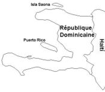

De: La Frikipedia, la enciclopedia extremadamente seria.
De: La Frikipedia, la enciclopedia extremadamente seria. De: La Frikipedia, la enciclopedia extremadamente seria.

|
Este artículo necesita ser ilustrado. Busca una afoto en nuestro depósito de imágenes o donde sea y ponla, pero que no sea pr0n, que se cabrea el señor del adSense y nos corta el grifo de los dólare. Y sin dólare no hay servidor... |
| De la serie Países del planeta tierra: | |||||
| Repú | |||||
|---|---|---|---|---|---|
| |||||
| Lema: "Licey Campeón" | |||||
| Himno: "llegan lo montro men"
| |||||
| 
| |||||
| Capital | Santo Domingo de los Apagones | ||||
| Mayor ciudad | Villa Juana City Y Villa Con City | ||||
| Lenguas oficiales | Cibaeño, Sureño, Spanglish | ||||
| Gobierno | FENATRADENSE | ||||
| Sindicalista | El que a Papa Obama le de la gana, actualmente Hubieres | ||||
| Área | Media isla (gracias a los malditos franceses) | ||||
| Población | 9 millones de dominicanos y casi lo mismo de haitianos | ||||
| Moneda | Caracolitos de mar y/o creditos de la uasd | ||||
| Zona horaria | GMT+-+-+ | ||||
| Dominio Internet | .platano | ||||
| Código telefónico | 00ring
| ||||
| Si te dejas atracar, es tu culpa, y no le diga' na' a lo' policía', que esos sí que te roban depué' | |||||
Para otros usos de este término/definición/cosa, véase Dominica.
La República Dominicana es un pedazo de país que ocupa algo más de los dos tercios orientales de la isla de Santo Domingo, La Hispaniola, La Española Quisqueya o Platanoland. Tiene una superficie territorial y lunar de 48.442 km² y una población de más de nueve millones de habitantes en su mayoria Sankypankys, Plataneros,Motoconchos, Aguateros, Bachateros, Peloteros, Dominicanyork, Politicos Corruptos, Haitianos, chopos y chapiadoras. La sede de la Corrupcion el gobierno y cuereria capital del país es Ciudad De Haiti Santo Domingo, las ciudades mas importantes del pais son El Cibao, Los Minas City, Villa Juana City, Los Rios City y Ciudad Trujillo
La República Platanera Dominicana limita al norte con el Océano Atlántico, al sur con el Mar Caribe o Mar de las Antillas, al este con Telemicro el Canal de la Mona, el transitado riachuelo que la separa de Haiti.
El 5 de diciembre de 1492 llegó a la Isla de Quisqueya un Hijue'su maldita madre navegante Genoves llamado Cristóbal Culón Colón (Se dice que Colón se cojia la reina por eso esta acepto a financiar el viaje en un tiempo de crisis para La Hispaniola.
Cuando Colón llego a la isla y vio las indias que andaban totalmente desnudas se impresiono tanto que se masturbo exclamo "Santa Maria que pinta tiene esa niña" desde entonces algunos Jabladores historiadores han malinterpretado la frase diciendo que "La Niña" (Que segun dicen no era ninguna Niña), "La Puta", "La Pinta" y "La Santa Maria" eran las tres carabelas en las que Colón salio de España.
El 4 de agosto de 1496, Bartolomé Colón, hermano de Santo Domingo y sus habitantes con el gentilicio de dominicanos.
Ha sido también gobernada durante varias ocasiones por el circo de los hermanos Mejía, siendo su principal atracción, el tigre Hipólito Mejía durante los años 2000 y 2004 D.S (Después de Shakira) y posteriormente por su noveno clon, cuatrocientos setenta años blur mas tarde. El cual, al ver una sociedad mas liberal que la anterior, decidio casarse con una lavadora, y declararse abiertamente lavadosexual, y a la que posteriormente nombro emperatriz y de cuya relación nació y fue enviado al pasado (que es el presente de ahora), su primogénito, Don Francisco. (Osea Don Francisco e de aqui, para lo que no entendieron)
La República Dominicana tiene un gobierno FENATRADENSE, donde el presidente es elegido por los chóferes de carros públicos y los vendedores de agua en fundita (100,000 votos seguros para Hipolito) más los tigueritos de Higüey sobornadas con Salami InduMierda Induveca de PocoAmable Arísty Castro cada cuatro años, aunque se hacen campañas todos los años. Los partidos políticos más importantes son: FENATRANO, CONATRA, ASOPROCAVEFE, SINCHOCA, ASOCHONCONCHADETUMADRE,PLD (PARTIDO DE LADRONES DOMINICANOS), FUNGLODE y FENATRÁTRÁTRÁTRÁ.
El gobierno distribuye equitativamente la pobreza, y reparte plátanos dañados a toda la población cada fin de semana. En adición el actual presidente Leonel Fernández creó un sistema de seguridad social donde se reparten medicinas vencidas a los que van buscando salud a los prostíbulos hospitales públicos.
Se espera que el próximo presidente inicie un proceso de reformas para aumentar la inexistente corrupción en el tren gubernamental, aunque se dice que el Consejo de Abuelos (al que los dominicanos llaman Congreso Nacional) tiene pensado conquistar al mundo sin hacer dichas reformas, a través del uso de armas secretas de contrabando traídas desde la vecina República de la Isla Saona.
En Republica Dominicana el gobierno esta llevando a cabo un plan modelo para los demas paises de america latina y el mundo muy eficaz para acabar con el hambre y la pobreza, el cual consiste en comerse a los pobres.
He aqui una corta lista de los partidos politicos de nuestro paisito, lleno de personas que, de una forma u otra, y con el pueblo sabiendo que les van a vaciar los bolsillos, llegan al poder cada 4 años, tras años, tras años:
El ejército dominicano está compuesto por 7,000 guachimanes, 9 policías, 32,000 generales, 14 militares, 4,000,000 de haitianas pedigüeñas, 900,000 narcotraficantes, y 3,100,500 niños que comparten su labor patriótica con oficios tales como oler cemento, bañarse en aguas negras, beber agua de tenis, y un largo etcétera.
Tienen vehículos y armamentos en cantidades descomunales de los que destacan novecientos helicópteros para transportar políticos (véase excluido el Bacho Va, que va para su casa en un corola del 2000) dos aviones que pasan con el único tanque de guerra en el desfile antes del carnaval, tres millones de geepetas para los políticos (en el mando, si no esta en el mando se la roban y se “desaparece” siendo reasignada a otro político y/o militar) un regero de escopetas, chilenas y usis todo esto solo para atacar estudiantes y así evadir los tigueres con poloche amarrados en la cabeza que tiran piedras en la UASD que es el campo de guerra dominicano donde se pasa mas lucha sin huelga que con ella. (FGH)
La Republica Dominicana cuenta con distinguidos edificios que han resaltado en el curso de la historia de nuestro MARDITO adorado país he aquí solo una pequeña lista de estos sagrados lugares, donde el tiempo no va, ni viene:
"las piedras las vendemos por separado"
La uasd es una institución "patrocinada por lubricantes venoco, viscosidad que se mantiene" en la cual la mayoría de los dominicanos de raza pobre llegan atraves del metro de la muerte a aprender cosas como técnicas de juidero y a alimentarse de todo lo que aparezca en un pica pollo cercano, aunque algunos sobreviven al comedor. No todos logran ingresar a este infierno lugar de enseñanza.debido a es bien difícil sobrevivir a larga sodomisacion de matricularse. todos los estudiantes de la uasd quieren mentarle la mai darle un cordial saludo a los encargados del autoserVICIO de la universidad. Pero apresar de los contra tiempos la uasd trabaja crece y cada 6 mese aproximamente es bendecida con una lluvia de piedras propinadas por sus estudiantes.
La uasd fue la primera carniceria medieval universidad del nuevo mundo y todos los días los estudiantes que viven en villa mella toman el metrosexual para llegar a su lugar de descarno eterno, pero la uasd no es solo piedras, fallas en el servicio electrico y autoserVICIO también existen diferentes facultades, 666 en total las cuales son:
Todas las facultades de la uasd fueron fundadas en el año -666 y el mismisisisisisimo Papa Noel asistio al gradioso evento, en el cual hubo un gran festejo por que solo faltaban 2666 años para la fundacion de la frikipedia.
Bedel: Persona encargada de decirte si un profesor está o no. Criaturas cuyos comportamientos pueden variar drásticamente si los fuñes mucho...!....Admirables por la paciencia que hay que tener para estar sentado como un completo idiota en el mismo lugar en un día completo.
Reajuste: Acción de cambiar de sección cuando te das cuenta de que hax caido en el gancho de coger clases con un profesor desgrasiadicimo y q te la va a poner en china.
Pino: Sinónimo de SEMILLITA, persona nueva en la universidad, cuyo comportamiento y forma de ser le delata vil y descaradamente, siendo objeto de burla por aquellos que ya han pasado a otra etapa en la UASDkara.
Embajada: Lugar donde todo el vago o el que no tiene nada que hacer va a perder su tiempo o a dar muela. Anteriormente usada para coger fresco pero después que existe la PEDRO MIR...Para qué diacheee?
AUTOSERVICIO: La porquería más grande jamás creada, más congestionada que la Gomez durante un Mitín del PLD en el período de reinscripción. Site cibernético donde los PINOS se dan cuenta de que la UASD no es un cachú!
Dar Pata: Acción propia del uasdiano, producto de las largas caminatas que hay que dar del FH al RL en 10 minutos y viceverxa. No tiene consecuencias perjudiciales, pues te levanta las NALGAS y te fortalec las batatas.
Proyección: Asunto que prueba tu paciencia al máximo, cuyo objetivo principal es saber cuál es la capacidad de tus pulmones para llenarse de aire al respirar profundo cuando solo te quieren proyectar 2 materias en un semestre de 8 según el pensum y se da el caso de que es un laboratorio sin teoría o alverre!!
Juidero 011: Materia de Ciclo Básico Real, Prueba lo aprendido al DAR PATA cuando se arma un corre corre y no puedes ver nada a causa de las bombas lagrimójenas u otra cualkier degracia k genere HUMO. Es de vital importancia ser aprobada por el UASDIANO y no podrá graduarc hasta haber aprobado todos los créditos de esta asignaura.
Vagos: De lo que está llena la UASD
Tomar Verano: Riexgo de sacrificar vacaciones dando materias del pensum sin tener la seguridad de que las notas serán publicadas.
ALASKA: sinónimo de la sala de lectura de la segunda planta de la biblioteca, (donde están los diccionarios). Lugar donde es casi imposible escribir debido a la gran intensidad del acondicionador de aire, que provoca entumeximiento de los dedos.
PC del PEDRO MIR: Aparatos especialixados en crear destrexas necesarias para saber cómo usar un PC sin la necesidad de un mouse.
Filita: Línea kilométrica formada desde ODONTOLOGíA hasta el Tony B. donde te pasas de 4 a 5 horas tratando de pagar los créditos. Suele a ramificarx y tiene la particularidad de que puedes pasart 1 y 2 horas en un mismo lugar sin moverte un centímetro debido a que solo hay 2 cajeros para 5 filas de mencionada magnitud.
AsaroXo: Término utilizado para designar a toda aquella persona que brinde un servicio en la UASD y que el mismo sea tildado de ineficiente o negligente, en este caso, Profesores, Coolaboradores, Encargados de departamentos, Cajeros, etc. Modo de Uso: Ese asaroXo no me resolvió lo de la nota...Esos Asaroxos de admisiones me la tan poniendo en China.. Muchas veces acompañada de malas palabras dependiendo del humor que se tenga al expresarz
CU: Edifio más antiguo de la UASD cuya evolución, al igual que muchas cosas en la Uni, está marcada por el retroxeso. Muchas veces su olor da más realx a su nombre (no mencionaré porké ). Con este peculiar nombre suelen formularx preguntas que identifican a los PINOS o al k nunca a ido a la UASD, Ej: Dónde está el CU?
La Doña: Dícese de toda akella señora mayor q' se gana la vida vendiendo cualkier tipo de alimento en los alrrededores de la UASD Ej: Ve comprame una empanada ahí donde la doña!
Profesor Bueno: En la mayoría de los casos, se refiere a todo akel facilitador de materia q' no hace NADA, no da clases, no da exámenes, va a veces y si le compras un folleto PASAS, y hace coro, chistes y dice malapalabras. Su comportamiento es todo lo contrario a un ASAROXO osea Una Vaina Bien!
Campo Abierto: o "CA" es el único lugar no especificado que posee un AULA específica. Ej: CA-203
Guá: Metaplasmo producido gracias a la mala pronunciación de las s. UASD, suele ser dicho en situaciones de pike o kille, Ej: Esa jodía guá der diabl-o me tiene jartoO!, o también en situciones de normalidad, Ej: Voy pa' la guá. Según expertos en el área linguística, llegará el tiempo en que la palabra UASD dejará de existir y será sustituida por esta muy graciosa e inculta variación! (Muy fuerte, No?)
Egresado: Mejor conocido como "Don Uté", es akella persona cuya paciencia y determinación hicieron que lograra terminar una carrera universitaria (o varias si cuentas "Especialidad en lanzamiento de Peñones", "Especialista en planificación de Juideros" y "Especialista en...EsPeRaR y EsPeRaR y EsPeRaR.....). Es digno de admiración y respeto.....Anda con su anillo pa'rriba y pa'bajo no importa k trabaje como chinero o Pollero y no hay kien se lo haga kitar de encima...!
Humanidades: Lugar mas famoso y viejo de guasd ke por degracia todo el ke estudia en ella tiene ke pasar por ahi, donde nunca aparece una butaca donde uno descansar un segundo en lo ke el profesor llega ke por costumbre siempre tuvo un contratiempo pero eso es cuento por ke estaba en el salon de maestro haciendo cuento para dar menos horas de clases o en el caso de ke sea un azaroXo ke te toke se extendera en su clase hasta hacerte creer ke no tiene fin y ke Dios se apiade de tu alma si el malnacido es profesor de filosofia...
P/A: traducido al lenguaje UASDiano kiere decir profesor asignado esto sirve para mortificarte antes e comenzar el semestre para ke no sepas si el profesor ke te va tocar es tu peor pesadilla o es un profesor bueno por lo regular resultar ser la encarnacion de lucifer ke es kasi igual a ke te lleve el dia...
Uno de los mayores cantantes de la República Dominicana es Juan Luis Guerra y su famosa Bachata en Fukuoka Batata en mi boca:

|
``Dile a doña juana que se acerca mi suegro
que lo que se epera con nada se encojona A la Duarte con parí yo viajé sin saberlo Y crucé la churchil con escala en tu polla
Se me agua la boca Quiero comé contigo (quiero) Una batata en mi boca
Comí una batata de momoshi, mi abuelo Y se me escapó un gran peíto del alma El que me enseñó a cocinar batata
(Pá comé contigo) Se me agua la boca Con tu pié de abrigo (quiero) Y una batata en mi boca
Y llegó la hora de partir porque ahí viene Juana diañe, ke vaina Y una palomita se cagó en mi ventana Coño mira, er diablo que vaina
Se me agua la boca Quiero comé contigo (quiero) Una batata en mi boca Una batata en mi boca
A batata, sabía tu boca Tengo, una niña de mascota Arriba, cagando en mi boca
(Pá comé contigo) Se me agua la boca Con tu pié de abrigo (quiero) Y una batata en mi boca
|

|
| Batata en mi boca |
Obtenido de una famosa carta cadena
1. Al encender su carro: Pida al Dios Todo Poderoso que lo cuide y proteja contra los peligros que
encontrará en las calles dominicanas. Tenga mucho cuidado con los "conductores en reversa". Esta clase de conductores son muy famosos por salir en reversa desde sus marquesinas, sin importarles mucho lo que pueda haber en el camino. Si se encuentra con uno de estos "conductores" entonces usted podrá poner en práctica el saludo dominicano de "conductores".
2. Saludo dominicano de conductores: Para saludar a un conductor dominicano, baje lentamente su ventana y con un tono grave y fuerte diga: "TU MALDITA MADRE", puede incluirse al final de la expresión algún sustantivo calificativo como: "JUE LA GRAN PUTA", "MARICONAZO", "DEGRACIAO", "FATAL", "MAMAÑEMA" (escoja el más adecuado). De todas maneras, esté siempre preparado para responder con un "VÁYASE A LA MIERDA" o "CÁLLESE BUENA MIERDA". En caso de que el otro conductor lo haya saludado primero. Puede acompañar el saludo con señales producidas con el dedo mayor de cualquiera de sus manos.pero los expertos en saludos son los dueños de las calles (guagueros) atención nunca pero nunca te meta con uno de los dueños de las calles para que llegue completo el carro a tu casa.
3. Luces direccionales: Si un conductor en otro carril enciende sus luces direccionales con la intención de cambiar de carril, no lo deje entrar a su carril. De hecho, pise el acelerador y póngase próximo a él. Es probable que el conductor intente saludarlo, pero usted ya sabe exactamente que hacer (ver párrafo anterior referente a saludos Dominicanos de Conductores).
4. Semáforos: Estos interesantes artefactos suelen encontrarse en las intersecciones de las calles sin tener ninguna razon de existir, pero ahí están. Es muy probable encontrar conductores detenidos observando como cambian las luces de colores (una experiencia fascinante). Los policías de tránsito creen que cada color tiene un significado que el conductor debe respetar. De la observación efectuada se ha determinado el significado de cada color:
5. Cambio de carril: Antes que nada, no importa lo que vaya a hacer, nunca encienda sus luces direccionales, de lo contrario provocar la reacción del otro conductor ver (Luces direccionales). Observe al conductor que viene por el carril al que desea cambiarse, y ante su menor descuido métase desenfrenadamente, se sorprenderá al darse cuenta que sólo necesita unos centímetros entre carro y carro. En ese momento será saludado (ver párrafo anterior referente a saludos Dominicanos de Conductores) por no menos de 3 conductores. Para perfeccionar su cambio de carril hay varias técnicas, por ejemplo: intente desacelerar su carro drásticamente y en cuestión de segundos, no deje de observar el fenómeno de reacción en cadena producido por el conductor de atrás, y en medio del caos cambie de carril y acelere.
6. Tapones: Durante los tapones se realizan actividades muy divertidas:
7. Peatones: Estos individuos son una molestia para los "conductores". En caso de encontrar uno de estos, acelere y muéstrele quién es el jefe. En las intersecciones, ceda el paso al peatón y cuando lo tenga en la mira tírele el carro arriba. Si no llega a darle, puesto que son muy hábiles, no se preocupe, seguramente le habrá dado un buen susto...
8. La nueva ley:(chóferes públicos) deben tener un carro nuevo (mentira una baina que corra en cuatro gomas) que tengan seguro (si seguro que te mueres) una radio(que funcione por favor) y que la capota esté pintada de verde o amarillo.
¿Nunca te has preguntado como sería el primer lanzamiento de un cohete espacial dominicano? ¿Se imaginan ustedes como sería todo si el gobierno Dominicano decidiera enviar al espacio un cohete tripulado, made in Dominican Republic?
(Inciclopedia Wikia)
Los dominicanos no se dejan morir de la jambre, se buscan el moro como sea y entre sus oficios más comunes tenemos:
Motoconcho: Medio de transporte en una motocicleta, donde suben desde 1 hasta 5 personas sin inclur el chofer, normalmente habitan en las esquinas, en las paradas estaciones de autobús o en todas partes sus respectivas paradas.
Aguatero: Es una forma de buscarse el moro la vida adoptada hace no muchos años, Conciste en subir un tinaco a la caja de las caminetas y venderlas por cubetas a los barrios mas pobres.
Cafetero: conciste en vender vasitos de café por las calles hechos con agua del rio mas cercano botellón (Garrafón de agua purificada).
Cuerear: Sinónimo de prostitución
Friturero Conciste en freica carne, pollo y platanos en una esquina o rincon de las calles al aire libre y siempre hay perros callejeros a ver que se le pega.
Guachiman: (vease articulo Guachiman)
En fin, el dominicano se la buca busca como sea, no importa si tiene que robar trabajar fuertemente para darle arroz sacar adelante su familia...
1.Quebranto: Misteriosa elevación de la temperatura corporal no lo suficientemente alta como para ser considerada fiebre, pero sí lo bastante seria como para faltar al trabajo o al colegio
2.Patatús: Ataque súbito de loquera de origen desconocido, el cual puede ser objeto de una hospitalización par a su observación. Generalmente le da a personas de 50 años en adelante.
3.Yeyo: Cualquier trastorno repentino que sea lo suficientemente grave como para ir al médico, tomar remedios y faltar al colegio, o trabajo. Puede utilizarse como sinónimo de patatús. Igual que "darle un yeyo", tambien decimos que "cayò redondo"............
4.Chichón: Protuberancia craneal usualmente causada por el coñazo (golpe) sufrido durante el patatús. Tambièn podrìamos llamarle "totuma". Cuando esto sucede, que el golpe es grande.... "se ven nimitas".
5.Empacho: Desorden digestivo ocasionado por una 'comida pesada' después de comer de la lata como por ejemplo: atunes, frutas, pierna de cerdo, chicharrones y dos botellas... La sociedad Gastronómica recomienda para estos casos ' gotas amargas' (el Alka Seltzer nunca es igual).
6.Sereno: Misteriosa sustancia que se riega particularmente en horas nocturnas y que afecta sobre todo a niños si no llevan la mollerita bien tapada. También afecta a personas mayores o a la personas con alto grado de embriaguez. Tambièn podemos decir "Muermo" o que està "Anortado".
7.Cuerpo Pesado: ¿Cómo explicarles a otro ser humano no nacido en Dominicana qué carajo es sentirse con el cuerpo pesado? Es una vaina así como que el tronco va para un lado, los brazos pesan más que el carajo y de paso las piernas no le dan...
¿Quién entiende esto? Si el malestar es de gripe, decimos que tenemos "el cuerpo cortado".
8.Salpullido: Erupción extraña compuesta por un poco de 'bolitas' que salen generalmente por el calor y también después de haber comido algo que no le cayó bien o es alérgico al cóctel de camarones el cual ha tragado más de la cuenta cuando fue por primera vez a la playa. Podrìamos tambièn llamarle a esto "Raquiña"?
9.Roncha: Las 'bolitas' anteriores pero apretujadas y que pican, que joden, sobre todo si están localizadas en partes nobles. Y a propósito, ¿por qué le dirán nobles?
10.Cogió un aire: Éste de verdad que tiene locos de remate a todos los científicos de Harvard, porque hasta el momento no se explican cómo es la fisiopatología de esta vaina: ¿Cómo uno se puede coger a un elemento gaseoso (aire)? Y el aire, ¿se deja coger así no más? Y si se deja coger, ¿por dónde? O tambien............ "Cogiò un viento"............
11.Le dió una vaina : No tiene lugar del cuerpo específico, el hecho es que esa 'vaina' se lo llevó.
12.Una vaina rara: Puede dar en cualquier parte del cuerpo.
13.Le dió nervios: Todo el mundo tiene nervios, pero en Dominicana, los nervios 'dan'. Se refiere cuando una situación genera confusión, miedo, angustia. Es peligroso porque puede terminar en patatús.
14.Coñazo: Caídas aparatosas, generalmente en sitios públicos, de las cuales quienes la sufren, a pesar de lo estrepitosos, se paran rapidito, como si nada hubiera pasado. O "toletazo".
15.Jodido: Estar mal, con algún dolor generalmente en alguna o todas las partes del cuerpo, pero también atribuible al dolor de estar sin trabajo o sin un peso. También alude a desarrollo mental.
16.Hecho mierda: Es un combo especial que incluye un síntoma de todas las enfermedades descritas anteriormente.
17.Estar directo:Cuando la persona tiene diarrea se dice asì o que està "de la vacinilla al catre".
18.No está congelando: Este tambien es cuando la persona tiene diarrea churria.
19.Ojo de pecao: Mayor mente producido por apuntar a la luna o decir malas palabras segun los viejos de los campos... esta enfermedad se manifiesta por una fea berruga de piel seca que sale a relucir en la piel del dominicano; entre las posibles Curas estan a) Comer Hojas De Roble. b) Bañarte en tu Orinas.
20.La raquiña: esta palabra proviene del latin "raqui" que signifca "racate" y "ña" que significa "ma quel diablo". Es una enfermedad nativa de este país y se caracteriza por provocar una sensación incontrolable de picazón la cual puede fácilmente llevar a la locura o rascarte con un palo con púas o clavos. Las personas que la padecen se les llama cariñosamente raquiñoso. En casos extremos la raquiña se puede extender a otras partes, provocando una patología conocida como "ladilla" la cual llega al extremo de que te rompas el escroto rascándote. Si tienes raquiña o ladilla no dudes de visitar el instituto de dermatologia donde te proporcionaran a un bajo precio un escroto nuevo si es ladilla o un jabón de cuaba si es solo raquiña.
1- De un dolor o
2- De repente
Aquì faltan los "nacíos", las "secas", "los golondrinos" (que generalmente son más de cinco), "los paños", "los sapos" (que le dan en la boca a los niños cuando se ponen un peine en la boca,limpiarle la lengua a los bebés con un algodoncito con miel de abeja, "los ojos de pescao", "las ñáñaras (uácala!!!!), "los uñeros", "la culebrilla" (que se si une se muere la persona), cuando la gente "se pama" y otras cosas màs.
También podríamos añadirle que cuando a la gente le duele la nuca dicen que le "duele el cerebro" y algunas "medicinas especiales" como comer carne de gato los asmáticos y si te pica una avispa o abeja en un pie, ponerlo en una vasija con orines (pero de los tuyos, porque si son ajenos no funciona), para que se baje la hinchazón. También sirve para esto ponerse ajo en la picada.
| |
|---|
| Bahamas | Barbados | Dominica | Granada | Guyana | Haití | San Cristóbal y ¿Nieves? | San Vicente y las Granadinas | Santa Lucía | Trinidad y Tobago | Uruguay | Venezuela |
Autor(es):